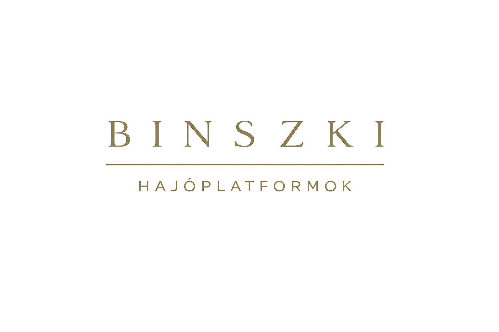
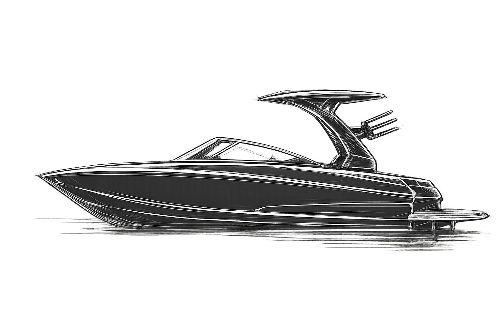
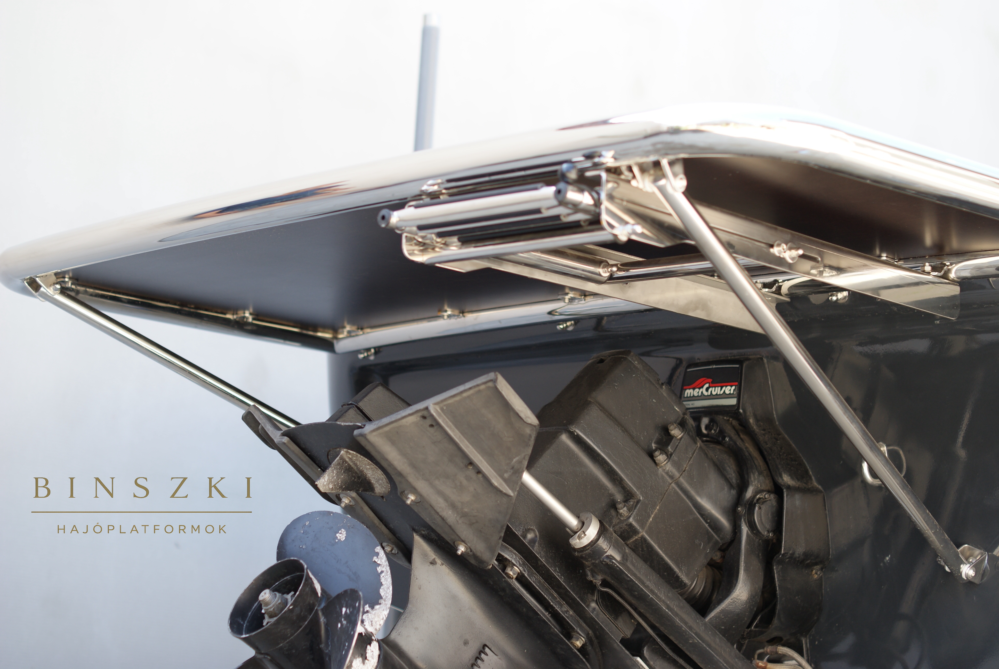
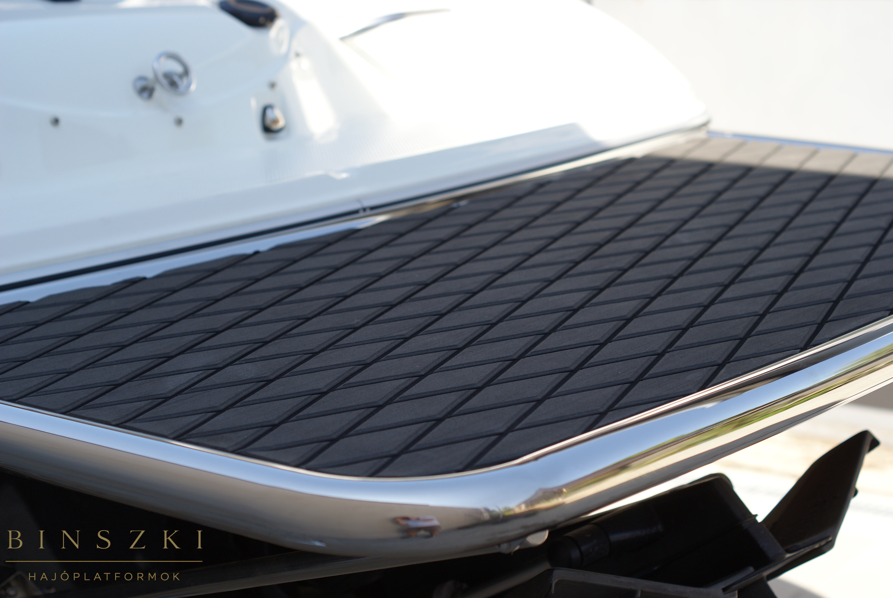
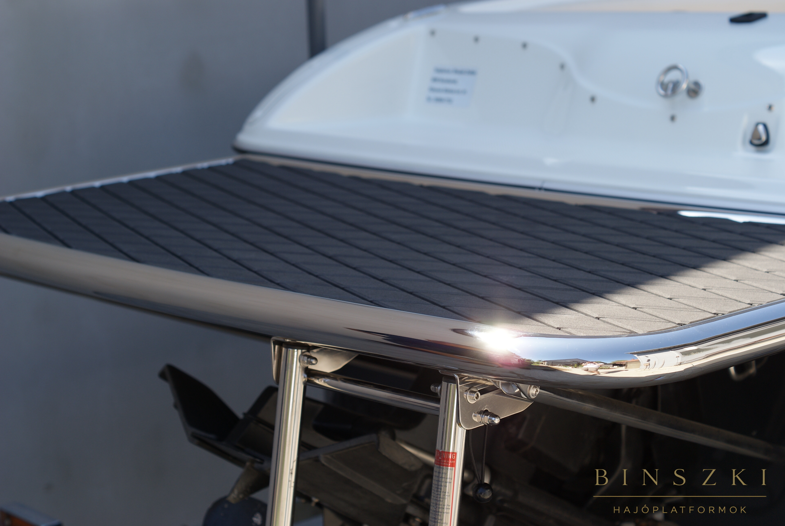
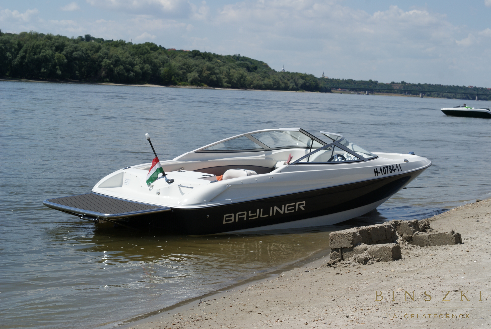
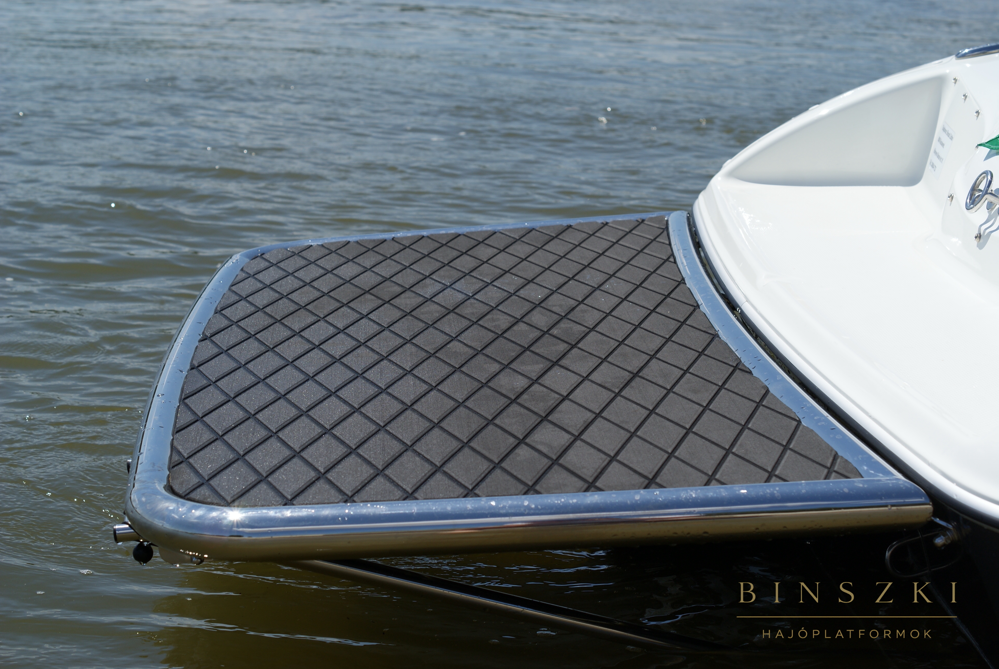
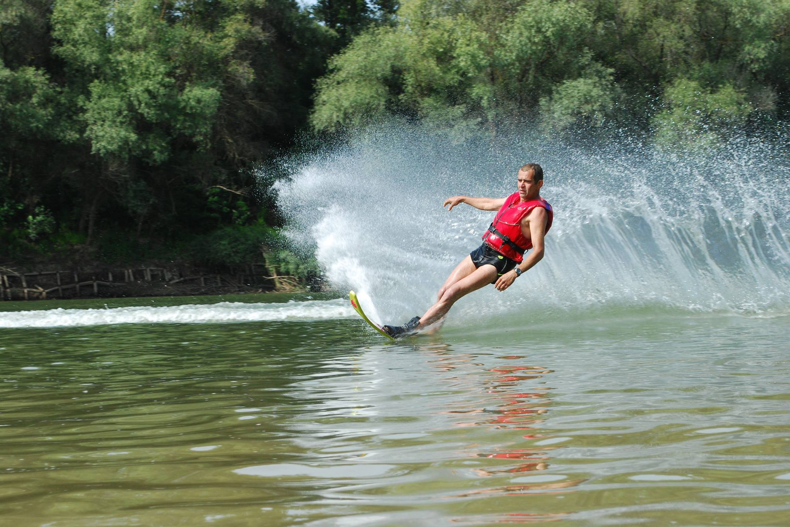

Célunk olyan egyedi megoldások készítése, amelyek tökéletesen illeszkednek a hajó karakteréhez. Minden projektünk a funkcionalitás, a tartósság és az elegáns megjelenés jegyében épül.
Ajánlatkérés
Minden platform az adott hajóhoz és az ügyfél igényeihez készül.
Kiemelkedő minőségű alapanyagok a hosszú élettartamért.
Gondos tervezés és részletorientált gyártás.





Több mint három évtizede foglalkozom fémipari tervezéssel és kivitelezéssel, miközben közel ugyanennyi ideje a vízi sportok is az életem szerves részét jelentik. Szerencsésnek érzem magam, hogy ezt a két területet összekapcsolhatom: a hajóplatformok gyártásában egyszerre kamatoztathatom szakmai tapasztalatomat és a vízen szerzett gyakorlati ismereteimet. Célom, hogy olyan tartós, biztonságos és esztétikus megoldásokat készítsek, amelyek valódi értéket nyújtanak ügyfeleim számára.

„Nem választottam a szenvedélyeim között - összekapcsoltam őket”
– Binszki ZoltánE-mail: binszki@t-online.hu
Kecskemét, Magyarország